|
Limita teritoriului administrativ |

|
Limita intravilanului propus |

|
Limita UTR |

|
Limita subzonă UTR |

|
Limita zonei centrale |

|
Servitute de utilitate publică |

|
Reconfigurare spațiu public urban |

|
Posibile locații pentru parcări publice subterane sau supraterane |

|
Pod/pasaj propus |

|
Delimitări ale zonelor construibile. Realinieri ale fronturilor străzilor |

|
Zona construită protejată |

|
Clădire monument istoric clasată în lista monumentelor istorice republicată în anul 2010
intervenţiile asupra acestora se vor realiza în regim specific |

|
Clădire echivalentă ca valoare monumentelor istorice ce ar putea fi clasată ca monument istoric
intervenţiile asupra acestora se vor realiza în regim specific monumentelor istorice |

|
Clădire cu valoare artistică ambientală
pentru această categorie e interzisă desfiinţarea totală sau parţială, modificarea expresiei arhitecturale, alterarea elementelor arhitecturale caracteristice |

|
Limita incintei Romane |

|
Zona arheologică protejată |

|
Zona naturală protejată de interes conservativ (habitat) - existentă |

|
Zona naturală protejată de interes conservativ - propusă |

|
Zona cu risc mediu-mare de alunecări de teren
Documentaţii geotehnice conf. NP 074-2007 + studii de stabilitate generală. |

|
Zona cu risc mare-foarte mare de alunecări de teren
Expertiza geotehnică pe un teritoriu relevant determinat de expert. |

|
Pista existentă 7-25 (2100m) Aeroportul Cluj-Napoca |

|
Pista extinsă 7-25 (3420m) Aeroportul Cluj-Napoca |

|
Zona de protecție sanitară a surselor de apă, cimitire, unităților cu risc tehnologic |

|
Zona de protecție / de siguranță a infrastructurii feroviare și rutiere |

|
Zona de siguranță / de protecție a magistralelor de gaz metan |

|
Zona de siguranță / de protecție a liniilor de înaltă tensiune |

|
Zona de siguranță / de protecție a magistralelor de alimentare cu apă |

|
Zona de siguranță M.A.P.N. cu avizul statului major general / Zona cu interdicție totală de construire |

|
Limita zonei de servitute aeronautică civilă conform RACR-CADT (zona I, zona II, zona III, zona IV) |

|
Zona de protecție a mijloacelor de navigație aeriană (CNS) și meteorologice conform RACR-CADT |

|
Mijloace de navigație aeriană (CNS) și meteorologice conform RACR-CADT |
 |
Limita administrativ teritorială a comunei Florești |
 |
Limita intravilan existent |
 |
Limita intravilan propus |
 |
Regim de scurgere permanent |
 |
Regim de scurgere temporar |
 |
Rețea hidrografică - ape |
 |
Păduri |
 |
Pădure în intravilan |
 |
Autostrada |
 |
Drum național |
 |
Drum județean |
 |
Drum comunal |
 |
Drumuri existente |
 |
Clădiri |
 |
Drumuri locale modernizate / propuse |
 |
Drum expres: TR35 și Varianta Ocolitoare Sud, trasee propuse |
 |
Nod denivelat propus |
 |
Tren metropolitan - sistem de transport metropolitan rapid Cluj-Napoca - Florești, Magistrala I de metrou; traseu propus |
 |
Zona cu vestigii arheologice ce necesită descărcarea terenului de sarcină arheologică |
 |
Zona de protecție a siturilor arheologice |
 |
Zona protecție obiective aparținând Ministerului Apărării Naționale |
 |
ZP - zona de protecție a monumentului istoric ZCP - zona construită protejată a monumentului istoric planșa desenează un singur simbol pentru ambele |
 |
Zona de protecție propusă pentru drumurile expres - variabilă |
 |
Zona de protecție - 22 m din marginea îmbrăcăminții asfaltice, de o parte și de alta a DN E60 |
 |
Zona de protecție - 20 m din marginea îmbrăcăminții asfaltice, de o parte și de alta a DJ 105 L / DJ 107 M |
 |
Zona de protecție - 18 m din marginea îmbrăcăminții asfaltice, de o parte și de alta a drumului comunal |
 |
Centura verde de protecție a localității (20 m de la limita intravilanului) |
 |
Zona verde de protecție 15 m de la limita albiei minore pentru apele curgătoare și la 15 m de la nivelul normal de retenție pentru lacuri |
 |
Zona protecție pădure (50 m de la lizieră) |
 |
Zona protecție sanitară cimitir (rază 50 m) |
 |
Zona cu riscuri naturale - risc geotehnic, alunecări de teren
interdicție temporară de construire |
 |
Zona cu riscuri naturale - zonă inundabilă
interdicție temporară de construire până la obținerea avizului A.A.R. |
Zone de protecție față de construcții și culoare tehnice.
 |
LEA 20 kV (zonă de protecție 12 m din ax, pe fiecare parte) |
 |
LEA 110 kV (zonă de protecție 18,5 m din ax, pe fiecare parte) |
 |
LEA 220 kV (zonă de protecție 27,5 m din ax, pe fiecare parte) |
 |
Stâlp |
 |
Post de transformare |
 |
Centrală hidroelectrică |
 |
Conductă de aducțiune apă potabilă Gilău-Cluj |
 |
Zona de protecție conductă aducțiune apă |
 |
Captări de apă de suprafață sau izvoare |
 |
Rezervor de apă - capacitate 200 m³, cu zonă de protecție R = 20 m |
 |
Rezervor de apă îngropat - propunere |
 |
Stație de pompare a apei potabile |
 |
Stație de pompare a apei uzate |
 |
Rețea majoră de distribuție a apei potabile |
 |
Rețea propusă de distribuție a apei potabile |
 |
Rețea majoră de canalizare a apei uzate menajere |
 |
Rețea colectoare a apei uzate menajere |
 |
Stație ecologică de tratare a apelor uzate |
 |
Rețea majoră distribuție gaze |
 |
Stație reglare gaze |
| Limita intravilanului propus | |
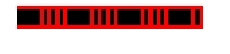 |
Limita teritoriului administrativ al unității teritoriale de bază |
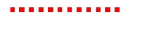 |
Limita zonei centrale |
| Limita zonei protejate Cheile Baciului
doar Baciu |
|
| Limita zonă fosiliferă
doar Corușu |
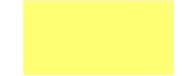 |
Zona pentru locuințe și funcțiuni complementare |
| Zona instituții publice și servicii | |
| Zona unități industriale, depozitare | |
| Zona unități agricole
Corușu, Sălistea Nouă, Mera |
|
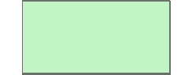 |
Spații plantate, agrement, sport |
| Case de vacanță | |
| Construcții turistice
doar Baciu |
|
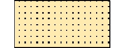 |
Zonă gospodărie comunală, cimitire |
| Zona construcțiilor aferente lucrărilor tehnico-edilitare | |
| Ape | |
| Zona căi de comunicație rutieră și amenajări aferente | |
| Zona căi de comunicație feroviară și amenajări aferente
Baciu, Mera |
| Drum național | |
| Drum comunal | |
| Cale ferată | |
| Varianta ocolitoare N (Apahida - Florești) | |
| Străzi |
| LEA 220 kV | |
| LEA 110 kV | |
| LEA 20 kV |
| Zona de protecție față de obiectivele cu valoare de patrimoniu | |
| Zone protejate pe baza normelor sanitare | |
| Zone protejate față de construcții și culoare tehnice | |
| Zone de protecție cimitire | |
| Zone de protecție cursuri de apă | |
| Zona de protecție calea ferată | |
| Zonă de protecție stație gaz
Mera, Rădaia, Suceagu |
|
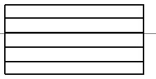 |
Zona de protecție pentru centura de ocolire N (Apahida - Florești)
Mera, Rădaia, Suceagu |
| Zonă de protecție față de monumentele naturii
doar Corușu |
|
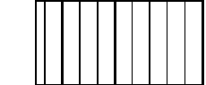 |
Interdicție temporară de construire
pe unele planșe: până la elaborare P.U.Z. |
| Zone protejate, obiective de interes patrimonial
se admite construirea numai pe baza avizului favorabil al Direcției Județene de Cultură, pe o rază de 200 m de la obiectiv |
|
| Zonă de protecție pe baza normelor sanitare | |
| Zonă de protecție față de construcții și culoare tehnice | |
| Zone protejate față de monumentele naturii
doar Corușu |
|
| Zonă de alunecări, conform proiect S.C. Minesa-ICPM S.A, simbol C50.983
se admite construirea numai după stabilizarea terenului |
|
| Zonă inundabilă, conform proiect S.C. Minesa-ICPM S.A, simbol C50.983
se admite construirea numai după eliminarea riscului de inundare |
|
| Intersecții propuse pentru relația numai la dreapta sau numai la stânga
doar Baciu |
Legendă comună celor șase planșe de reglementări ale P.U.G. Comuna Apahida („Extindere intravilan 2004”): Apahida, Sânnicoara, Dezmir, Câmpenești, Corpadea și Pata. Elementele care apar doar pe unele planșe sunt marcate ca atare.
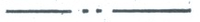 |
Limita teritoriului administrativ al municipiului Cluj-Napoca
Sânnicoara, Dezmir, Câmpenești |
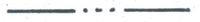 |
Limita teritoriului administrativ al comunei |
| Limita intravilanului existent | |
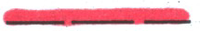 |
Limita intravilanului propus (2004) |
| Limita zonei de protecție – monument de arhitectură: biserica de lemn
„Sfinții Arhangheli” din 1806
doar Apahida |
|
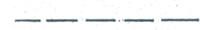 |
Limita zonei inundabile
doar Apahida |
Culoarea conturului identifică zona funcțională a fiecărui U.T.R. de pe planșă. Codurile sunt detaliate în secțiunea U.T.R.
| Instituții și servicii de interes public – existente
ISe, IS-TM, IS-TA |
|
| Locuințe și funcțiuni complementare – existente
Le |
|
| Locuințe și funcțiuni complementare – propuse
Lp |
|
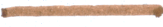 |
Industrie și depozite – existente
IDe · Apahida, Sânnicoara, Dezmir, Corpadea, Pata |
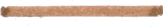 |
Industrie și depozite – propuse
IDp · Apahida, Sânnicoara, Dezmir, Pata |
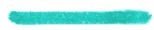 |
Unități agrozootehnice – existente
Ae · Apahida, Sânnicoara, Dezmir, Câmpenești, Pata |
| Zona căii ferate
C-C.F. · Apahida, Sânnicoara, Dezmir |
|
| Zonă de sport, protecție și agrement – existentă
SPe |
|
| Zonă de sport, protecție și agrement – propusă
SPp · Apahida, Sânnicoara, Dezmir |
|
| Gospodărie comunală, cimitire – existente
Gce |
|
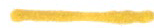 |
Gospodărie comunală, cimitire – propuse
Gcp · Sub Coasta, Dezmir, Câmpenești, Corpadea, Pata |
| Ape
H |
|
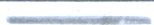 |
Terenuri neconstruibile
N · Dezmir, Corpadea, Pata |
| Drum național
Apahida, Sânnicoara, Dezmir, Corpadea |
|
| Drum județean
Apahida, Dezmir, Corpadea, Pata |
|
| Drum comunal | |
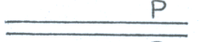 |
Străzi principale |
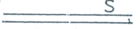 |
Străzi secundare |
| Traseu nou la D.N. 1 C
Apahida, Sânnicoara |
|
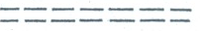 |
Corectare traseu D.N. și amenajare intersecție
doar Dezmir |
| Străzi noi, străpungeri, corecții locale | |
| Drum de ocolire propus
Apahida, Sânnicoara, Dezmir |
|
| Poduri, podețe noi propuse
Apahida, Corpadea |
|
| Pasaje denivelate la C.F. propuse
Apahida, Sânnicoara, Dezmir |
|
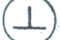 |
Intersecții propuse pentru amenajare |
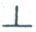 |
Blocarea accesului din străzi secundare la D.N.
Apahida, Sânnicoara |
| Parcaje propuse |
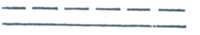 |
Limita zonei de protecție a drumului
22 m pentru D.N., 20 m pentru D.J., 18 m pentru D.C., măsurate de la axul drumului; în zona de protecție este interzisă orice activitate care aduce prejudicii calității drumului sau derulării în siguranță a traficului |
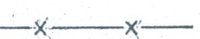 |
Limita zonei de protecție a căii ferate
100 m · autorizațiile de construire necesită avizul Direcției Regionale S.N.C.F.R. · Sânnicoara, Dezmir |
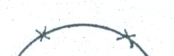 |
Limita zonei de protecție sanitară
doar Dezmir |
| Limita zonei de protecție a cursurilor de apă
Sânnicoara, Dezmir, Câmpenești, Corpadea |
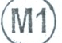 |
„Sub Coasta” – așezare preistorică, epoca bronzului (1,00 ha)
Sânnicoara |
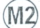 |
„La est de sat” – tumul preistoric (0,15 ha)
Sânnicoara |
În perimetrele M1 și M2 orice tip de lucrări sau activități necesită avizul Muzeului de Istorie.
Legendă comună celor patru planșe de reglementări ale P.U.G. Comuna Feleacu: Feleacu, Gheorgheni, Vâlcele și Sărădiș (2005) și Casele Micești (1999). Planșele nu folosesc aceeași legendă – cea a satului Feleacu este cea mai detaliată, iar Casele Micești, fiind cu șase ani mai veche, are una minimală. Elementele care apar doar pe unele planșe sunt marcate ca atare.
| Limita intravilanului existent
datat 2002 pe planșa Feleacu; fără an pe celelalte |
|
| Limita intravilanului propus
roz pe planșa Feleacu și pe Casele Micești, roșu pe Gheorgheni, Vâlcele și Sărădiș |
|
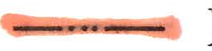 |
Limita teritoriului administrativ al comunei Feleacu |
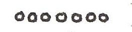 |
Limita rezervație naturală
doar Feleacu |
| Limita zonei de protecție – zona protejată „Făget – V. Morilor”,
program „Natura 2000”
doar Feleacu |
|
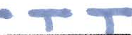 |
Limita zonei afectate de alunecări de teren active sau stabilizate
doar Feleacu |
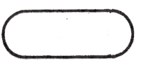 |
Indicativ U.T.R.
Gheorgheni, Vâlcele, Sărădiș |
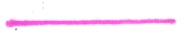 |
Limita U.T.R.
Gheorgheni, Vâlcele, Sărădiș |
| Interdicție temporară de construcție
Gheorgheni, Vâlcele, Sărădiș |
|
| Interdicție definitivă de construire
Gheorgheni, Vâlcele, Sărădiș |
|
| Zonă protejată față de linii de înaltă tensiune și de conducte magistrale de gaz natural
planșele folosesc același semn pentru ambele |
|
| Zone protejate pe baza normelor sanitare | |
| Zonă de protecție față de obiectivele cu valoare de patrimoniu
Gheorgheni, Vâlcele, Sărădiș |
|
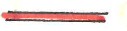 |
Limita zonei de protecție a monumentelor istorice
doar Feleacu |
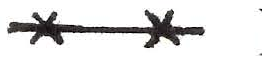 |
Limita zonei de protecție ecologică sanitară
doar Feleacu |
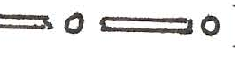 |
Limita zonei de protecție peisagistică
doar Feleacu |
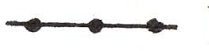 |
Limita zonei de protecție pentru rețele tehnico-edilitare
doar Feleacu |
Culorile sunt cele din tabelul „Bilanț teritorial” al planșei Feleacu, singura care le tipărește. Simbolurile sunt detaliate în secțiunea U.T.R.
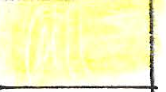 |
Zonă pentru locuințe și funcțiuni complementare
LMPR |
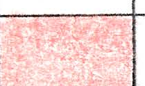 |
Zonă pentru instituții și servicii de interes public
IS |
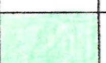 |
Zonă pentru unități agricole
A |
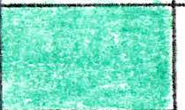 |
Zonă păduri și perdele forestiere de protecție
PPP |
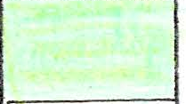 |
Zonă spații verzi, sport, agrement, turism
PTS |
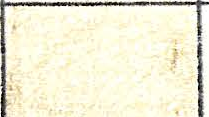 |
Zonă pentru gospodărie comunală
GC |
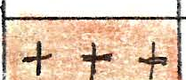 |
Subzona cimitire
GCCI · subdiviziune a zonei GC |
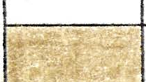 |
Zonă a construcțiilor aferente tehnico-edilitare
TE · doar Feleacu |
Trei zone apar în bilanțurile teritoriale fără culoare proprie pe planșe: CCR – zonă pentru căi de comunicație rutieră, TAR – zonă a terenurilor aflate permanent sub apă, și I – zonă pentru unități industriale, depozitare și prestări servicii, aceasta din urmă doar în bilanțul satelor Vâlcele și Sărădiș.
Legendă comună celor patru planșe de reglementări U.T.R. ale P.U.G. Comuna Gilău: 6.1 Gilău, 6.2a și 6.2b Someșu Rece, 6.3 Someșu Cald.
| Unități teritoriale de referință | |
| Limita intravilanului propus | |
| Limita U.A.T. Gilău
limita teritoriului administrativ al comunei |
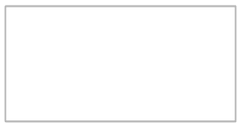 |
Arabil
doar pe planșa 6.3 Someșu Cald |
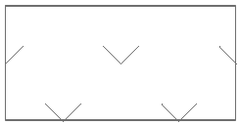 |
Fânațe
notat F_Fanate pe planșe |
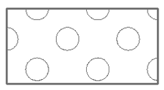 |
Pădure
fondul forestier acoperă 57,63% din suprafața comunei |
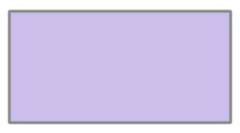 |
Căi de comunicație rutieră
06_Ccr |
Legenda planșelor tipărește o singură culoare de zonificare, deși harta colorează toate zonele funcționale. Restul zonelor se citesc de pe hartă după codul înscris în fiecare U.T.R. – lista completă a codurilor este în secțiunea U.T.R. de mai jos.
| Lacuri
lacurile de acumulare Gilău, Someșu Cald și Tarnița |
|
| Curs de apă permanent | |
| Curs de apă temporar |
Legenda planșei nr. 8 „Unități teritoriale de referință” (sc. 1:10.000, 1997) a P.U.G. Municipiul Turda, aprobat cu HCL 160/16.12.1999.
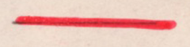 |
Limita teritoriului intravilan propus
trupul principal și 12 trupuri independente |
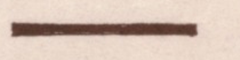 |
Limita unităților teritoriale de referință |
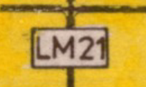 |
Indicativ U.T.R.
literele arată subzona funcțională, cifra numărul unității |
Legenda planșei conține doar cele două limite. Culorile de pe hartă nu sunt explicate și nu corespund unei subzone anume (de ex. U.T.R.-urile LM apar în portocaliu, galben, verde sau roz). Subzona se citește după indicativul înscris în fiecare U.T.R. – lista codurilor este în secțiunea U.T.R. de mai jos.
Cătunul Petrilaca (LR1, LR2) este desenat pe planșă într-un chenar separat și a fost poziționat pe hartă independent.
| U.A.T. Comuna Chinteni | |
| Intravilan propus P.U.G. 2023
Trup 1 – 798,83 ha, Trup 2 – 23,51 ha |
|
| Intravilan P.U.G. 2018
1222,6 ha |
|
| Zonă de centru protejat | |
| Zona studiată – P.U.Z. Sub Plopi | |
| P.U.Z. Terra Mare | |
| Zonă cu păstrarea reglementărilor din P.U.G. 2018 |
| Zona de protecție Pârâul Chinteni și lac | |
| Zonă risc de inundații 5% | |
| Zonă risc de inundații 1% | |
| Zonă alunecări de teren | |
| Zonă protecție pădure 50 m | |
| Rază de protecție poligon | |
| Rază protecție stație de epurare | |
| Zonă protecție sanitară – stație de epurare | |
| Zonă de protecție sanitară | |
| Zonă de protecție față de obiective cu valoare de patrimoniu | |
| Situri arheologice – localitatea Chinteni | |
| Zonă de protecție a siturilor arheologice |
| Centura ocolitoare Nord | |
| Zonă de siguranță 22 m – centura de nord |
| LEA 20 kV | |
| LEA 110 kV | |
| Zonă protecție LEA |
| Limita U.T.R.
majoritatea U.T.R.-urilor; codurile sunt explicate în secțiunea U.T.R. de mai jos |
|
| U.T.R. Lv – zonă de locuințe viitoare | |
| U.T.R. Aquapark | |
| U.T.R. Gc E, Gc P, Gc L – gospodărie comunală | |
| Lacul Chinteni |
| Păduri |
| Albia Pârâului Chinteni | |
| Ape curgătoare | |
| Ape curgătoare cu regim de scurgere temporar | |
| Captări de ape / rezervoare |
| Etapa 1
zonele de sistematizare S_Lr, S_CC, S_Cm |
|
| Etapa 2
zonele Lv și S_Va, care necesită P.U.Z. |
| Sens giratoriu propus | |
| DJ 109A | |
| Profil stradal 12 m | |
| Profil stradal 10 m | |
| Profil stradal 8 m | |
| Profil 12 m – traseu posibil | |
| Profil 10 m – traseu posibil | |
| Profil 8 m – traseu posibil |
Planșa nr. 3 „Situație propusă – Unități teritoriale de referință” a Reactualizării P.U.G. Orașul Gherla (S.C. Inter Proiect S.R.L., proiect nr. 365/1998).
| Limita teritoriului intravilan propus 1998 | |
| Număr U.T.R.
UTR 1 – UTR 29 |
Legenda planșei nr. 3 conține doar aceste două elemente. Culorile de pe hartă sunt cele ale planșei de zonificare funcțională. Mai jos sunt redate integral cele trei legende din volumul P.U.G.: zonele și subzonele funcționale, legenda planșei de zonificare și reglementările.
| Lm – Subzona locuințe unifamiliale cu regim general de înălțime P, P+1 etaje (cu accente P+2)
Lm.su – locuințe unifamiliale P, P+1 etaje existente; Lm.su.r – existente cu restricții de construire; Lm.su.cm – existente aflate în interiorul zonei protejate (cetatea Martinuzzi); Lm.su.p – propuse |
|
| Lp – Subzona locuințe unifamiliale cu regim de înălțime P, P+2 etaje aflate în interiorul zonei protejate a centrului istoric (Orașul baroc) existente | |
| Lb.p.p. – Locuințe familiale cu regim de înălțime S+P+1(M) la S+P+3(M) propuse – cu P.U.Z. sau P.U.D. elaborat și aprobat
Lb – subzona locuințe familiale cu regim de înălțime S+P+1(M) la S+P+3(M) propuse |
|
| Lb.p. – Locuințe familiale cu regim de înălțime S+P+1(M) la S+P+3(M) propuse | |
| Li.e. – Locuințe colective cu regim de înălțime P+2, P+4 etaje existente
Li – subzona locuințe colective cu regim de înălțime P+2, P+4 etaje |
|
| IS – Zona instituții publice și servicii
IS.a – unități administrative; IS.co – unități comerciale; IS.i – unități învățământ; IS.ct – culte; IS.c – unități cultură; IS.s – unități sanitare; IS.sp – unități sport; IS.fb – unități financiar-bancare; IS.sv – unități servicii (inclusiv cazare); IS.as – unități asistență socială |
|
| IS.p. – Subzona instituții publice și servicii propuse |
| I. – Subzona unități industriale existente | |
| I.cm. – Subzona unități industriale existente aflate în interiorul zonei protejate (Castelul Martinuzzi) | |
| I.p. – Subzona unități industriale propuse | |
| A – Zona unităților agricole: subzona unități agricole existente | |
| P – Zona de parcuri (și balnear), agrement, turism și sport
Po – subzona parcuri; Pb – subzona balneară; Pt – subzona turistică; Ps – subzona sport; Pp – subzona plantații de protecție |
|
| G – Zona de gospodărie comunală
G.c. – subzona cimitire existente; G.c.cm. – subzona cimitire existente aflate în interiorul zonei protejate (Castelul Martinuzzi) |
|
| G.s. – Subzona rampă depozitare deșeuri | |
| TE – Zona construcțiilor aferente lucrărilor tehnico-edilitare | |
| CC.r. – Zona căi de comunicație și construcții aferente: subzona căi de comunicație rutiere | |
| CC.f. – Subzona căi de comunicație feroviare | |
| S – Zonă cu destinație specială
S. – subzona cu destinație specială existentă; S.cm. – subzona cu destinație specială existentă aflată în interiorul zonei protejate (cetatea Martinuzzi) |
|
| TA – Zona terenuri aflate permanent sub ape |
| Limita teritoriului administrativ al orașului Gherla | |
| Propunere de modificare limita teritoriului administrativ al orașului Gherla | |
| Limita teritoriului intravilan existent – proiect I.C.P. nr. 2902/04/1994 | |
| Limita teritoriului intravilan propus – 1998 |
| Zona de dotări și funcțiuni complexe de interes public |
| Locuințe unifamiliale cu regim de înălțime P – P+2 etaje în cadrul zonei protejate a centrului istoric – existente | |
| Locuințe unifamiliale cu regim general de înălțime P – P+1 etaje (cu accente P+2) – existente – cu posibilități de întregire funcțională conform regulament | |
| Locuințe familiale cu regim de înălțime S+P+1(M) la S+P+3(M) – propuse | |
| Locuințe colective cu regim de înălțime P+2 – P+4 etaje existente |
| Zona unităților industriale | |
| Zona unităților agricole |
| Parcuri, zona balneară, terenuri de sport, vegetație de protecție |
| Cimitire | |
| Rampă de depozitare deșeuri – provizoriu | |
| Rampă de depozitare deșeuri – propus |
| Construcții aferente rețelelor tehnico-edilitare | |
| Drum național | |
| Drum județean | |
| Drum comunal | |
| Străzi de circulație locală | |
| Zona căilor ferate și construcții aferente | |
| Zona cu destinație specială | |
| Dig de apărare existent |
| Ape curgătoare |
| Zonă protejată cu valoare istorică și arhitecturală – centrul istoric al orașului (Orașul baroc)
perimetru clasificat în lista monumentelor istorice la poziția 13E009 Gherla; orice tip de intervenție se poate autoriza numai cu acordul reprezentanței zonale a C.N.M.A.S.I. (Comisia Națională a Monumentelor de Arhitectură și Siturilor Istorice) |
|
| Construcții – monumente istorice și de arhitectură clasificate
lista în partea scrisă |
|
| Limita zonei tampon referitoare la centrul istoric (Orașul baroc), precum și alte zone care necesită
măsuri de protecție din punct de vedere a siturilor arheologice, de protecție a monumentelor de arhitectură etc.
vezi reglementările din regulamentul local de urbanism |
Numărul de ordine P.U.G. / numărul de ordine din repertoriu. Orice tip de lucrări sau activități umane în aceste zone impune obținerea avizului Muzeului de Istorie al Transilvaniei.
| Așezare preistorică | |
| Obiecte neolitice | |
| Topor neolitic de piatră | |
| Resturi neolitice | |
| Așezare preistorică | |
| Așezare preistorică | |
| Ruinele castrului roman | |
| Așezare din faza de tranziție spre epoca bronzului | |
| Urme de construcții ale așezării civile, obiecte romane | |
| Drumul roman | |
| Lespede funerară (sec. XII) |
| Zonă protejată cu valoare balneară
necesită întocmirea unui P.U.D. pentru stabilirea zonei de protecție, rezolvarea accesului din drumul național etc. |
|
| Zonă protejată cu valoare peisagistică | |
| Zonă de protecție în conformitate cu normele sanitare | |
| Zona de protecție a infrastructurii feroviare (100 m)
autorizațiile de construire necesită avizul Regiei Autonome S.N.C.F.R. și al Ministerului Transporturilor |
|
| Restricții conform reglementări CONEL |
| Restricții privind căile de comunicații rutiere
în zonele de protecție a căilor rutiere clasificate din intravilan este interzisă orice activitate care aduce prejudicii calității drumului sau derulării în siguranță a traficului; fâșii de protecție față de axa drumului: 22 m pentru DN1C și DC172 (propus pentru reclasificare în drum național), 20 m pentru DJ109C și DJ172F, 18 m pentru DC37 |
|
| Restricții privind vecinătățile zonelor speciale
în vecinătatea obiectivelor speciale din intravilan, pe parcelele limitrofe și pe cele situate în cealaltă parte a străzilor învecinate cu incinta, autorizarea oricărei lucrări necesită și avizul M.Ap.N. |
|
| Zone de locuințe propuse – cu P.U.Z. sau P.U.D. elaborat și aprobat
se vor respecta prevederile P.U.Z. sau P.U.D. |
|
| Zone de locuințe propuse
necesită întocmirea și aprobarea unui P.U.Z. sau P.U.D. (care va rezolva parcelarea, echiparea și circulația interioară din zonă) |
|
| Zonă de dotări propusă – de interes orășenesc și prestări servicii
necesită întocmirea și aprobarea unui P.U.Z. sau P.U.D. |
|
| Zona unităților industriale existente
se impune reautorizarea funcțiunii cu respectarea normelor și prevederilor în vigoare |
|
| Zone rezervate pentru activități economice nepoluante
se va putea construi conform P.U.Z. sau P.U.D. aprobat (și elaborarea studiilor de impact pentru activitățile economice prevăzute de lege) |
|
| Zona unităților agricole existente
se impune reautorizarea funcțiunii cu respectarea normelor în vigoare; funcțiunea existentă poate fi schimbată după elaborarea și aprobarea unor documentații de specialitate (P.U.D. sau P.U.Z.) |
|
| Propunere de reclasificare a porțiunii drumului comunal DC172 (drumul roman) în drum național | |
| Propunere de limitare a circulației auto în vederea pietonizării – Piața Libertății latura nord | |
| Străzi noi propuse | |
| Intersecții principale la nivel propuse pentru amenajare și semaforizare | |
| Intersecții principale denivelate de cale ferată propuse pentru amenajare și echipare | |
| Intersecții secundare la nivel de cale ferată propuse pentru amenajare și echipare |
Documente actualizate conform HCL 23/2022 si sentinte civile 407/2019 49/2023
Conform planșei A2.2 „Reglementări urbanistice - zonificare Florești” și tabelului de indicatori spațiali din reactualizarea P.U.G. comuna Florești. Sursa
P.O.T. și C.U.T. sunt valorile maxime din tabelul de indicatori spațiali. Linkurile Detalii deschid capitolul corespunzător din Regulamentul Local de Urbanism (decembrie 2025). Verificați întotdeauna regulamentul în vigoare înainte de orice decizie.
UTR-urile ZCIR, CSh1, L2L, L2T, L3, M1, RM1, SVA, SA, GC, Cc, DS III și TDS3 apar pe planșa din 2024, dar nu au capitol propriu în regulamentul din decembrie 2025, deci nu au link către detalii.
Intervenții permise numai pe bază de P.U.Z.
Conform planșelor de reglementări (2013) și tabelelor „Zonificare funcțională” de pe fiecare planșă, aprobate prin H.C.L. Baciu nr. 6 din 14.02.2013.
Comuna Baciu cuprinde 7 sate: Baciu, Corușu, Mera, Popești, Rădaia, Sălistea Nouă și Suceagu. Zonele și subzonele de mai jos sunt comune tuturor satelor; nu toate apar în fiecare sat.
Fiecare U.T.R. este numerotat în cadrul subzonei (de ex. La-1, Lp-3) și atribuit unui trup de intravilan (T1–T6). Tabelele sursă nu conțin valori P.O.T. și C.U.T. – coloana este necompletată pe toate cele 7 planșe.
Conform planșelor de reglementări ale P.U.G. Comuna Apahida – „Extindere intravilan 2004” și tabelelor „Divizarea în U.T.R.” de pe fiecare planșă.
Comuna Apahida cuprinde satele Apahida, Sânnicoara, Dezmir, Câmpenești, Corpadea și Pata. Planșa Sânnicoara acoperă și satul Sub Coasta, iar planșa Pata acoperă și satul Bodrog; fiecare are propriul tabel de U.T.R. Zonele de mai jos sunt comune întregii comune; nu toate apar în fiecare sat.
Fiecare U.T.R. este numerotat în cadrul zonei funcționale (de ex. Le3, Gcp1) și atribuit unui trup de intravilan (T1 – T8, respectiv T1′ și T2′ la Bodrog și T5′ la Corpadea). Codurile satului Bodrog sunt marcate cu prim (′) pentru a le deosebi de cele ale satului Pata.
| Sat | U.T.R. | Trup |
|---|---|---|
| Apahida | ISe1, IS-TM2 | T1 |
| Apahida | IS-TM1 | T5 |
| Apahida | IS-TA | T6 |
| Sânnicoara | ISe1÷ISe7 | T1 |
| Dezmir | ISe1÷ISe4 | T1 |
| Câmpenești | ISe1÷ISe4 | T1 |
| Corpadea | ISe1÷ISe4 | T1 |
| Corpadea | IS-TM1, IS-TM2 | T5, T5' |
| Pata | ISe1÷ISe11 | T1 |
| Bodrog | ISe1', ISe2' | T1' |
| Bodrog | IS3' | T2' |
| Sat | U.T.R. | Trup |
|---|---|---|
| Apahida | Le1÷Le17 | T1 |
| Apahida | Le18÷Le20 | T2 |
| Apahida | Lp1÷Lp10 | T1 |
| Apahida | Lp11, Lp12 | T2 |
| Sânnicoara | Le1÷Le10 | T1 |
| Sânnicoara | Lp1 | T1 |
| Sub Coasta | Le1÷Le3 | T1 |
| Sub Coasta | Lp1÷Lp5 | T1 |
| Dezmir | Le1÷Le6 | T1 |
| Dezmir | Lp1÷Lp5 | T1 |
| Câmpenești | Le1÷Le3 | T1 |
| Câmpenești | Le4 | T2 |
| Câmpenești | Lp1÷Lp5 | T1 |
| Câmpenești | Lp6, Lp7 | T2 |
| Corpadea | Le1÷Le9 | T1 |
| Corpadea | Le10 | T2 |
| Corpadea | Lp1÷Lp13 | T1 |
| Pata | Le1, Le2 | T1 |
| Pata | Lp1÷Lp5 | T1 |
| Bodrog | Le1' | T1' |
| Bodrog | Le2' | T2' |
| Bodrog | Lp1'÷Lp3' | T1' |
| Sat | U.T.R. | Trup |
|---|---|---|
| Apahida | IDe1÷IDe6 | T1 |
| Apahida | IDe7 | T8 |
| Apahida | IDe8, IDe9 | T2 |
| Apahida | IDp1÷IDp6 | T1 |
| Apahida | IDp7, IDp8 | T2 |
| Sânnicoara | IDe1÷IDe9 | T1 |
| Sânnicoara | IDp1, IDp2 | T1 |
| Dezmir | IDe1÷IDe5 | T1 |
| Dezmir | IDp1, IDp2 | T1 |
| Corpadea | IDe1 | T1 |
| Pata | IDe1÷IDe6 | T1 |
| Pata | IDp1 | T1 |
| Sat | U.T.R. | Trup |
|---|---|---|
| Apahida | Ae1÷Ae5 | T1 |
| Sânnicoara | Ae1 | T1 |
| Dezmir | Ae1÷Ae3 | T1 |
| Câmpenești | Ae1, Ae2 | T2 |
| Pata | Ae1 | T1 |
| Sat | U.T.R. | Trup |
|---|---|---|
| Apahida | C-C.F.1 | T1 |
| Sânnicoara | C-C.F.1, C-C.F.2 | T1 |
| Dezmir | C-C.F.1 | T1 |
| Sat | U.T.R. | Trup |
|---|---|---|
| Apahida | SPe1÷SPe11 | T1 |
| Apahida | SPp1÷SPp5, SPp7 | T1 |
| Apahida | SPp6 | T2 |
| Sânnicoara | SPe1÷SPe3 | T1 |
| Sânnicoara | SPp1 | T1 |
| Dezmir | SPe1÷SPe4 | T1 |
| Dezmir | SPp1÷SPp4 | T1 |
| Corpadea | SPe1 | T1 |
| Pata | SPe1÷SPe5 | T1 |
| Sat | U.T.R. | Trup |
|---|---|---|
| Apahida | Gce1, Gce2, Gce7÷Gce9 | T1 |
| Apahida | Gce3 | T3 |
| Apahida | Gce4 | T4 |
| Apahida | Gce5 | T7 |
| Apahida | Gce6 | T2 |
| Sânnicoara | Gce1÷Gce3 | T1 |
| Sub Coasta | Gce1 | T1 |
| Sub Coasta | Gcp1 | T1 |
| Dezmir | Gce1÷Gce3 | T1 |
| Dezmir | Gce4 | T3 |
| Dezmir | Gcp1÷Gcp4 | T1 |
| Dezmir | Gcp5 | T2 |
| Câmpenești | Gce1, Gce2 | T1 |
| Câmpenești | Gce3, Gce4 | T2 |
| Câmpenești | Gcp1 | T3 |
| Corpadea | Gce1, Gce2 | T1 |
| Corpadea | Gce3 | T7 |
| Corpadea | Gce4, Gce6 | T6 |
| Corpadea | Gce5 | T4 |
| Corpadea | Gcp1 | T4 |
| Corpadea | Gcp2 | – |
| Pata | Gce1, Gce2, Gce5, Gce7, Gce8 | T1 |
| Pata | Gce3 | T2 |
| Pata | Gce4 | T3 |
| Pata | Gce6 | T5 |
| Pata | Gcp1 | T4 |
| Pata | Gcp2 | T6 |
| Sat | U.T.R. | Trup |
|---|---|---|
| Apahida | Cr-DN, Cr-DJ, Cr-DC | T1 |
| Sânnicoara | Cr-DN, Cr-DC | T1 |
| Sub Coasta | Cr-DC | T1 |
| Dezmir | Cr-DJ, Cr-DC | T1 |
| Câmpenești | Cr-DC | T1, T2 |
| Corpadea | Cr-DN, Cr-DJ, Cr-DC | T1 |
| Pata | Cr-DJ, Cr-DC | T1 |
| Bodrog | Cr-DC | T2' |
| Sat | U.T.R. | Trup |
|---|---|---|
| Apahida, Sânnicoara, Sub Coasta, Dezmir, Câmpenești, Corpadea, Pata | H | T1 |
| Bodrog | H | T1' |
| Sat | U.T.R. | Trup |
|---|---|---|
| Dezmir | N | T1 |
| Corpadea | N | T1 |
| Pata | N | T1 |
Conform planșelor de reglementări și zonificare ale P.U.G. Comuna Feleacu și tabelelor „Bilanț teritorial” de pe fiecare planșă.
Comuna Feleacu cuprinde satele Feleacu, Gheorgheni, Vâlcele, Sărădiș și Casele Micești. Planșele satelor Feleacu, Gheorgheni și Vâlcele–Sărădiș sunt din 2005; planșa satului Casele Micești este din 1999, anterioară introducerii U.T.R.-urilor, și nu conține unități teritoriale de referință.
Spre deosebire de Apahida, unde U.T.R.-urile sunt numerotate în cadrul fiecărei zone funcționale, la Feleacu numerotarea este continuă pe întreaga comună (U.T.R. 1, 2, 3 …), iar fiecare sat continuă seria satului precedent. Doar planșa satului Feleacu tipărește și denumirile U.T.R.-urilor; pe celelalte planșe U.T.R.-urile sunt marcate pe hartă cu indicativ, fără listă de denumiri.
Intravilanul fiecărui sat este împărțit în trupuri numerotate (de ex. Trup 2.1 Vâlcele, Trup 4.3 Sărădiș, Trup 5.1 Casele Micești).
Simbolurile de mai jos sunt cele folosite în bilanțurile teritoriale ale planșelor și determină regimul de construire al fiecărui U.T.R.
| U.T.R. | Denumire |
|---|---|
| U.T.R. 1 | Zona centrală |
| U.T.R. 2 | Zona „Prundărie Est” |
| U.T.R. 3 | Zona „Prundărie Vest” |
| U.T.R. 4 | Zona „Făget – Podu Lupii” |
| U.T.R. 5 | Rampa de deșeuri Vest |
| U.T.R. 6 | Zona „Valea Căprioarei” |
| U.T.R. 7 | Zona „Mazărele – Rumâni” |
| U.T.R. 8 | Zona „Pe Pârâu” |
| U.T.R. 9 | Zona „Glimeia” |
| U.T.R. 10 | Zona „Pe Deal” |
| U.T.R. 11 | Zona „Antena TV” |
| U.T.R. 12 | Rampa de deșeuri Est |
| U.T.R. 13 | Locuințe Făget |
| U.T.R. 14 | Zona „Sub Râpă” |
| U.T.R. 15 | Zona „Rumâni” |
| U.T.R. 16 | Zona „Pădurea Clujului” |
Satul Feleacu are și trupuri izolate de intravilan, marcate pe planșă – între altele Trup 11 Feleacu, Trup 12 (rampa de deșeuri Est), Trup 13 (rampa de deșeuri Vest), Trup 14 (observator astronomic) și Trup 15 (Făget).
Planșele acestor sate marchează U.T.R.-urile pe hartă, cu indicativ și limită, dar nu tipăresc o listă de denumiri așa cum face planșa satului Feleacu. Numerotarea continuă seria comunei, pornind de la U.T.R. 17.
Pentru a identifica U.T.R.-ul unei parcele, folosiți harta: selectați planșa satului și citiți indicativul din ovalul de pe hartă, apoi regulamentul local de urbanism pentru zona funcțională corespunzătoare.
Satul Casele Micești are planșa din 1999 și nu conține U.T.R.-uri; intravilanul său este împărțit doar în Trup 5.1 și Trup 5.2.
| Sat | Intravilan existent (ha) | Intravilan propus (ha) |
|---|---|---|
| Feleacu | 426,13 | 511,77 |
| Vâlcele | 248,45 | 310,20 |
| Gheorgheni | 207,99 | 257,87 |
| Sărădiș | 44,90 | 44,90 |
| Casele Micești | – | 19,92 |
Planșa satului Casele Micești (1999) nu raportează suprafețe existente. Cea mai mare creștere propusă în satul Feleacu este la zona de spații verzi, sport, agrement și turism (de la 24,62 la 62,62 ha) și la zona de locuințe (de la 331,16 la 369,08 ha).
Conform Regulamentului Local de Urbanism al P.U.G. Municipiul Turda (S.C. Edita S.R.L., proiect nr. 24/1995/1, noiembrie 1999) și planșei nr. 8 „Unități teritoriale de referință”.
Regulamentul trimite la un „Tabel centralizator al prescripțiilor” anexat, cu reglementările fiecărui U.T.R., însă tabelul nu este publicat împreună cu documentația. Planșa nu are nici listă de denumiri. Semnificația prefixelor de mai jos a fost stabilită prin corelarea indicativelor de pe planșă cu subzonele funcționale din regulament (cap. III–V) și cu amplasamentele descrise în memoriul general.
Regulamentul menționează 102 U.T.R.-uri; pe planșă se citesc 103 indicative.
Funcțiune dominantă: dotări majore de interes orășenesc și teritorial. P.O.T. maxim 80%; 70% în centrul istoric și centrul civic.
Funcțiuni interzise: locuințe și dotări publice.
Înălțimea construcțiilor: maximum 2 niveluri.
Conform tabelului „Zonă funcțională – UTR – Definire” de pe planșa de reglementări a satului Chinteni și Regulamentului Local de Urbanism din Revizuirea P.U.G. Comuna Chinteni. Paginile indicate sunt cele ale regulamentului (vol. I pag. 1–115, vol. II pag. 116–219).
Prefixul S_ marchează zonele de sistematizare, care necesită avizul consiliului județean pentru parcelare înainte de obținerea D.T.A.C. Legenda planșei mai conține U.T.R. Zp și U.T.R. IS (P.U.Z.).
Regim de înălțime maxim, în general: D+P+M sau S+P+M; în satul Chinteni se admite și D+P+1E / S+P+1E.
Conform Regulamentului – Unități teritoriale de referință (UTR 1 … UTR 29) din Reactualizarea P.U.G. Orașul Gherla 1998 (S.C. Inter Proiect S.R.L.). Fiecare U.T.R. are o fișă cu zonele funcționale și reglementările specifice; mai jos este rezumatul acestora.
Codurile subzonelor sunt explicate în primul card. Localitățile componente Băița, Hășdate și Silivaș au U.T.R.-uri proprii, numerotate separat, dar nu apar pe hartă.
În zonele protejate, intervențiile se fac pe baza unor proiecte avizate de C.J.M.A.S.I. Cluj (după caz și C.N.M.A.S.I.) și, pentru scoaterea de sub sarcină arheologică, de Muzeul de Istorie al Transilvaniei. Sunt interzise acoperișurile terasă și finisajele străine de Gherla.
Reguli comune: în Li.e nu se permit construcții noi, doar amenajări exterioare prin P.U.D. pe întregul cvartal, reamenajări interioare și acoperirea blocurilor cu șarpantă. În Lm.su se pot construi sau reface locuințe familiale la aliniamentul străzii; în afara aliniamentului este necesar P.U.D. Zonele Lb.p se autorizează numai pe baza unui P.U.Z. sau P.U.D. aprobat pentru întreaga zonă.
Aceste U.T.R.-uri nu sunt cuprinse în planșa afișată pe hartă.